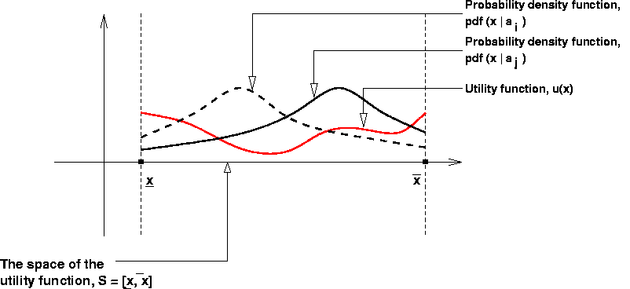
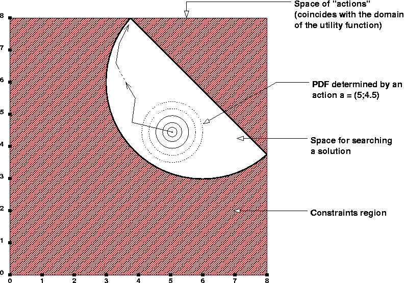

[Last updated on: Tuesday, May 12, 2020]
The SimpleOpt algorithm.
Its application for solving expected utility optimization problems
Copyright © 2003, by Dan Mugurel Ontanu & Mihnea Horia Vrejoiu
(SimpleOpt adaptation for Python 3.x: © 2020, by Mihnea Horia Vrejoiu)
1. Introduction
2. A
simple
example
3. Conclusions
DOWNLOAD
ABSTRACTA simple, general purpose optimization tool (SimpleOpt) has been designed and developed under the Python language. If you are not (yet) familiar with SimpleOpt, please see also "The SimpleOpt algorithm. Its application to general purpose optimization problems". The purpose of this document is to describe how the SimpleOpt algorithm can be applied to solve expected utility optimization problems. It only deals with the static case. For the dynamic one, please refer to "Solving expected utility optimization problems - the dynamic case". The introduction (section 1) presents a brief overview of the expected utility optimization problems. For making things as attractive and easy understandable as possible, a simple example for a 2-D utility function is provided (in section 2). This example shows how a new type of problem (in our case, the optimization of expected utility) can be inserted as a plug-in in SimpleOpt. This means that for a new category of optimization problems, one should only procedurally define the appropriate problem class, and then, just use SimpleOpt on it. We expect that such a "plug-in" mechanism can be used as well on other categories of optimization problems, up to a reasonable extent. This document ends with some conclusions (section 3), and a list of available downloads.
An expected utility optimization problem could
be briefly described as in the following:
Let u be an "utility" function
u : S --> R, where S is a subset of Rn.
For practical purposes, we may take S as a n-dimensional interval (a "hyper box"):
S = [x0 min, x0 max] x ... x [xi min, xi max] x ... x [xn-1 min, xn-1 max],
with xi min, xi max in R.
On the same subset S, let's consider a family of probability density functions (pdf), whose members are individualized by a parameter (a) called "action".
pdf : S x A --> [0, 1], where A = set of possible "actions",
with the property that:
S pdf (x
| a) dx = 1.
S
For instance, if we consider S to be a set of "events", then u(x) represents the utility of the "event" x, while pdf(x | a) represents the probability of the "event" x, given the "action" a.
The optimization problem in this case, could be expressed as searching for an "action" a, which maximizes the integral:
S u(x) pdf(x | a)
dx,
S
over the set of "actions" A, given the constraints:
Gj(a) <= 0, j = 0 ... m-1, with a in A.
The above integral represents the expected utility, given an "action" a. The above described problem could thus be seen as the optimization of a correlation function over a given space of "actions", each of them being subject of a number of given constraints.
The following picture shows the framework of the problem, for the 1-dimensional case.

Let's consider an utility function defined as a sum of "humps" (as described in section 4 of "The SimpleOpt algorithm. Its application to general purpose optimization problems"), and a probability density function (pdf) in the form of a bi-dimensional Gaussian, defined on the same space as the utility function. For this example, we chose a simple "action" model, one such "action" being represented by the center of the Gaussian function. Therefore, the "actions" set (A) can be considered to coincide with the utility function space, and the constraints defined on the "actions" are in fact constraints over the domain of the utility function. This way, an "action", which is a pair of co-ordinates, personalizes the pdf, by giving its location within the utility space. The application of SimpleOpt on such a problem, leads to finding a point (that is, an "action") for which the local resemblance of the utility function with the corresponding pdf is maximum. From the SimpleOpt point of view, the problem space is the set of "actions" A, bounded by the given constraints G, and the objective function is the integral representing the expected utility (regarded as a function of "action"). SimpleOpt is searching for an "action" a, for which this integral has a maximum value.
The Python script which implements the above example, is presented bellow.
#
-------------------------------------------------------------------
# Mandatory imports:
# - problem definition class
# - simple, general-purpose optimizer class
# -------------------------------------------------------------------
from problem import *
from simpleopt import SimpleOpt
#
-------------------------------------------------------------------
# Auxiliary imports
# -------------------------------------------------------------------
import math
#import Numeric # needed for plotting purposes
#import Gnuplot # needed for plotting purposes
#
-------------------------------------------------------------------
# Auxiliary data and function definitions
# -------------------------------------------------------------------
# For the "humps"
p = [(1, 6),
(0, 3), (2, 1), (3, 3), (5, 5), (6, 4), (6, 2)]
alfa = [2, 2, 2, 2, 2, 2, 2]
beta = [1, 1, 1, 1, 1, 1, 1]
# For the "action" constraints
center = (6, 6)
radius = 3
# -------------------------------------------------------------------
def dist(x, y):
return math.sqrt((x[0] - y[0])*(x[0] - y[0]) +
(x[1] - y[1])*(x[1] - y[1]))
# -------------------------------------------------------------------
def hump(i, x):
return beta[i] * math.exp(-dist(p[i], x) / alfa[i])
#
-------------------------------------------------------------------
# Domain of definition for the utility function:
# a list of bounds on each coordinate, in the form (xmin, xmax)
# -------------------------------------------------------------------
my_u_bounds = [(0, 8), (0, 8)]
#
-------------------------------------------------------------------
# Procedural definition of the utility function u(x)
# -------------------------------------------------------------------
def myutility(x):
sum = 0
for i in range(len(p)): sum += hump(i, x)
return sum
#
-------------------------------------------------------------------
# Specification of the "action" space:
# a hyperbox, defined as a list of bounds on each coordinate, in the
# form (xmin, xmax)
# -------------------------------------------------------------------
my_a_bounds = [(0, 8), (0, 8)]
# the same as the u(x) domain
# -------------------------------------------------------------------
# Procedural definition of the set of constraints gi for the
# "actions" space
# -------------------------------------------------------------------
# NOTE: Each i personalizes a constraint function gi. For a given i
# (that is, a given constraint, myconstraint(i, x) must return a
# value <= 0 if the constraint is satisfied, and > 0 if not
# -------------------------------------------------------------------
# Two disconnected constraint regions
def myconstraint(i, a):
if i == 0: return dist(a, center) - radius # circular
if i == 1: return a[0] + a[1] -
11.8 # linear
return 1 # no other index allowed
# One constraint region, problem space made of 2 disconnected regions
#def myconstraint(i, a):
# if i == 0:
# if dist(a, center) - radius < 0 and a[0] +
a[1] - 11.8 < 0:
return 1
# else: return -1
# return 1
#
-------------------------------------------------------------------
# Procedural definition of the probability distribution function
# PDF(x, a)
# -------------------------------------------------------------------
# It should be defined over the utility function domain, and
# personalized by a given "action"
# -------------------------------------------------------------------
def myPDF(x, a):
# A unitary hump, centered at a given "action" a
d = dist(x, a)
return math.exp(-(d*d / 0.01))
#
-------------------------------------------------------------------
# Program starting point
# -------------------------------------------------------------------
if __name__ == "__main__":
# Specify your optimization
problem here, getting an instance of it.
# Parameters:
# - problem name
# - dimension of the input space
# - number of constraints
# - list of bounds
# - objective function
# - constraints function
# - desired starting point reference (optional
list of coordinates)
myproblem = EU_Problem("eu_func2d",
2,
2,
my_a_bounds,
my_u_bounds,
myutility,
myPDF,
myconstraint)
# Create a personalized
instance of the optimizer, by specifying:
# - the problem
# - maximum number of steps for the search
process
# - maximum search depth (1 - 500)
# - minimum search step size (the search process
resolution)
# - whether to use backtracking (1), or not (0)
# - whether to use graphics (1), or not (0)
so = SimpleOpt(myproblem, 100000, 0.1, 5, 0, 0)
# Start the optimizer
so.optsearch()
#
-------------------------------------------------------------------
# -------------------------------------------------------------------
REMARKS:
Please note that, in the above script, in order to define the optimization problem, the EU_Problem class was called instead of the Problem one. In this case, the objective function has not to be explicitly specified anymore, being defined as an internal attribute of the EU_Problem class.
You can also observe that for the example problem proposed, the constraint is given in two ways,
one of them being commented off. A graphical representation of the un-commented constraint is
presented in the following figure (the commented one being represented by a
complementary image).

In order to run yourself the Python code presented in this section, you can:
- either copy and paste the script from this page (as text only) in a simple text file (e.g. eu_func2d.py),
- or, preferably, download the eu_func2d.py
script directly from here,
and then use the command:
python eu_func2d.py
Obviously, you should also have the optimizer modules already on your computer. If not, you can download them now (choose one of: the new SimpleOpt for Python 3.x, or the old SimpleOpt for Python <= 2.x).
REMARK:
When running the above program, if the numeric.py and gnuplot.py modules, and the Gnuplot utility, or alternatively, the MatPlotLib library and numpy module are installed on your computer, the optsearch method can also provide a graph representing the evolution of the objective function during the search of a local maximum. The graph always represents an increasing curve. This happens because the search algorithm tries to find points for which the value of the objective function is greater than for the current one, at each step / iteration. The curve depends on the starting search point, and ends either when a real local maximum is found, or the allowed number of steps / iterations is reached, or the domain limit is overridden.
This document described how the SimpleOpt algorithm can be applied to solve expected utility optimization problems. It only treated the static case. For the dynamic one, please refer to this page. A brief overview of the expected utility optimization problems was presented. For making things as attractive and easy understandable as possible, a simple example for a 2-D utility function was also provided. This example showed how a new type of problem can be inserted as a plug-in in SimpleOpt. This means that for a new category of optimization problems, one should only procedurally define the appropriate problem class, and then, just use SimpleOpt on it. We expect that such a "plug-in" mechanism can be used as well on other category of optimization problems, up to a reasonable extent.
| simpleopt.py |
the Python 3.x code for the optimizer |
| problem.py |
the Python 3.x code for the problem specification |
| eu_func2d.py |
Python example code to call SimpleOpt for an expected utility function (2-D example) |
| simpleopt.zip |
the "zip" archive containing the SimpleOpt modules (for Python 3.x) |
| simpleopt-old.zip |
the "zip" archive containing the SimpleOpt modules (for Python <= 2.x) |